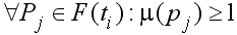
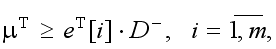
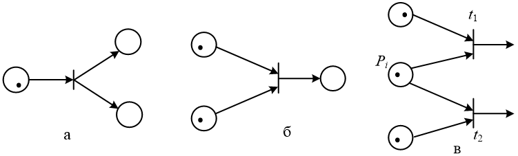

Функционирование сетей Петри
Выполнение определенных условий связано с появлением меток в соответствующих этим условиям позициях. Последовательность событий, происходящих в моделируемой системе, отображается срабатыванием переходов. В результате срабатывания одного из переходов сети происходит перераспределение фишек между позициями, и маркировка сети изменяется. Сеть Петри функционирует, переходя от одной маркировки к другой.
Необходимое условие срабатывания перехода t i-тое: каждая из его входных позиций должна иметь не меньше фишек, чем число дуг из этой позиции в переход, т.е. 
Переход t i-тое, для которого выполняется данное условие, называется разрешенным.
В результате срабатывания перехода t i-тое из всякой входной позиции p j-тое перехода t i-тое удаляется столько фишек, сколько дуг ведет из p j-тое в t i-тое, а в каждую выходную позицию p k-того помещается столько фишек, сколько дуг ведет из t i-того в p k-тое.
Переходы t i-тое могут срабатывать в любом порядке, возникающий порядок появления событий не однозначен. Разрешенные переходы не влияют друг на друга.
Условие срабатывания перехода t1 в имеющейся маркировке μ записывается следующим образом:

где eT[i] – вектор-строка, компоненты которого соответствуют переходам и все равны нулю, за исключением i-й, которая равна единице. Срабатывание перехода рассматривается как мгновенное событие, занимающее нулевое время.
После срабатывания перехода, имеющего несколько выходных позиций, все позиции получают метки, т.e. происходит распараллеливание процесса, и активизированные параллельные участки могут выполняться независимо. Сети Петри предусматривают также конфликтные состояния, когда необходимо запретить одновременное развитие нескольких процессов.
Переходы t1 и t2 находятся в конфликте: запуск одного из них удаляет фишку из p i-того и тем самым запрещает другой.
